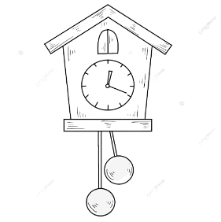
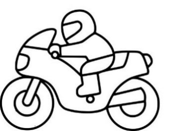
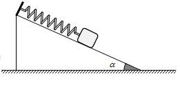
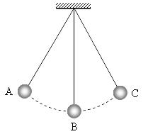

Luyện tập
Bài 6 · Trắc nghiệm · phần 1
Bài 6 · Dao động tắt dần, cưỡng bức, cộng hưởng · 20 câu
Trắc nghiệm
Đúng / Sai
Trả lời ngắn
Tự luận
⌂ Trang chủ
1
2
3
4
5
6
7
PHẦN I. Câu trắc nghiệm nhiều phương án lựa chọn
Mỗi câu có 4 phương án, chỉ chọn một đáp án đúng (0,25 điểm).
1
Nhận biết
Hiện tượng cộng hưởng chỉ xảy ra với
A.
dao động riêng.
B.
dao động điều hòa.
C.
dao động tắt dần.
D.
dao động cưỡng bức.
2
Nhận biết
Một vật dao động tắt dần có các đại lượng giảm liên tục theo thời gian là:
A.
biên độ và tốc độ.
B.
biên độ và gia tốc.
C.
biên độ và năng lượng.
D.
li độ và tốc độ.
3
Nhận biết
Dao động tự do là dao động mà chu kì
A.
không phụ thuộc vào các đặc tính của hệ.
B.
chỉ phụ thuộc vào các đặc tính của hệ không phụ thuộc vào các yếu tố bên ngoài.
C.
phụ thuộc vào các đặc tính của hệ.
D.
không phụ thuộc vào các yếu tố bên ngoài.
4
Nhận biết
Dao động tắt dần
A.
có biên độ không đổi theo thời gian.
B.
luôn có lợi.
C.
luôn có hại.
D.
có biên độ giảm dần theo thời gian.
5
Nhận biết
Dao động tắt dần là dao động
A.
có biên độ giảm dần theo thời gian.
B.
có li độ giảm dần theo thời gian.
C.
có gia tốc giảm dần theo thời gian.
D.
có vận tốc giảm dần theo thời gian.
6
Nhận biết
Dao động tự do là dao động có chu kì
A.
chỉ phụ thuộc đặc tính của hệ, không phụ thuộc yếu tố bên ngoài.
B.
chỉ phụ thuộc yếu tố bên ngoài, không phụ thuộc đặc tính của hệ.
C.
chỉ phụ thuộc khối lượng vật dao động.
D.
chỉ phụ thuộc gia tốc trọng trường.
7
Nhận biết
Dao động nào sau đây của con lắc đơn là dao động tự do tại nơi làm thí nghiệm?
A.
Dao động của con lắc đơn trong chân không.
B.
Dao động của con lắc đơn trong không khí.
C.
Dao động của con lắc đơn trong nước.
D.
Dao động của con lắc đơn trong dầu.
8
Nhận biết
Hiện tượng cộng hưởng nào sau đây là có lợi?
A.
Giọng hát của ca sĩ làm vỡ li.
B.
Đoàn quân hành quân qua cầu.
C.
Bệ máy rung lên khi chạy.
D.
Không khí dao động trong hộp đàn ghi ta.
9
Nhận biết
Hiện tượng cộng hưởng thể hiện càng rõ nét khi
A.
lực cản của môi trường càng lớn.
B.
lực cản của môi trường nhỏ.
C.
biên độ lực cưỡng bức nhỏ.
D.
tần số của lực cưỡng bức càng lớn.
10
Nhận biết
Hiện tượng cộng hưởng nào sau đây là có hại?
A.
Không khí trong hộp đàn violon khi nghệ sĩ chơi nhạc.
B.
Các phân tử nước trong lò vi sóng hoạt động
C.
Dao động của khung xe ô tô có tần số cưỡng bức bằng tần số riêng.
D.
Vận động viên nhảy cầu mềm.
11
Nhận biết
Chọn phát biểu đúng về dao động cưỡng bức?
A.
Tần số của vật dao động cưỡng bức là tần số dao động riêng của vật.
B.
Biên độ của vật dao động cưỡng bức là biên độ của ngoại lực tuần hoàn tác dụng vào vật.
C.
Tần số của vật dao động cưỡng bức là tần số của ngoại lực tuần hoàn tác dụng vào vật.
D.
Biên độ của vật dao động cưỡng bức chỉ phụ thuộc vào tần số của ngoại lực tuần hoàn tác dụng lên vật.
12
Nhận biết
Nguyên nhân gây ra dao động tắt dần của con lắc đơn trong không khí là
A.
do trọng lực tác dụng lên vật.
B.
do lực căng dây treo.
C.
do lực cản môi trường.
D.
do dây treo có khối lượng đáng kể.
13
Nhận biết
Trong dao động tắt dần có đại lượng nào sau đây luôn giảm dần theo thời gian?
A.
Độ lớn vận tốc.
B.
Li độ.
C.
Biên độ.
D.
Độ lớn gia tốc.
14
Nhận biết
Dao động cưỡng bức trong giai đoạn ổn định có
A.
tần số lớn hơn tần số của lực cưỡng bức.
B.
biên độ giảm dần theo thời gian.
C.
tần số nhỏ hơn tần số của lực cưỡng bức.
D.
biên độ không đổi theo thời gian.
15
Nhận biết
Nguyên nhân gây ra dao động tắt dần của con lắc đơn trong không khí là
A.
do lực căng dây treo.
B.
do trọng lực tác dụng lên vật.
C.
do lực cản môi trường.
D.
do dây treo có khối lượng không đáng kể.
16
Nhận biết
Trong dao động tắt dần, đại lượng nào sau đây luôn giảm dần theo thời gian?
A.
Gia tốc.
B.
Vận tốc.
C.
Li độ.
D.
Biên độ.
17
Nhận biết
Bộ phận giảm xóc của xe máy, ô tô hoạt động dựa trên ứng dụng của
A.
dao động có cộng hưởng.
B.
dao động tắt dần.
C.
dao động duy trì.
D.
dao động cưỡng bức.
18
Nhận biết
Khi một vật dao động tắt dần thì
A.
tần số của vật giảm dần theo thời gian.
B.
li độ của vật giảm dần theo thời gian.
C.
biên độ của vật giảm dần theo thời gian.
D.
chu kì của vật giảm dần theo thời gian.
19
Nhận biết
Hiện tượng cộng hưởng xảy ra khi
A.
tần số của lực cưỡng bức bằng tần số riêng của hệ.
B.
tần số dao động bằng tần số riêng của hệ.
C.
tần số của lực cưỡng bức nhỏ hơn tần số riêng của hệ.
D.
tần số của lực cưỡng bức lớn hơn tần số riêng của hệ.
20
Nhận biết
Trong những dao động tắt dần sau, trường hợp nào tắt dần nhanh có lợi?
A.

Dao động của đồng hồ quả lắc.
B.

Dao động của khung xe qua chỗ đường mấp mô.
C.

Dao động của con lắc lò xo trong phòng thí nghiệm.
D.

Dao động của con lắc đơn trong phòng thí nghiệm.
Làm lại
Nộp kết quả
Bắt đầu luyện tập
Nhập thông tin để hệ thống ghi nhận kết quả.
Họ và tên
Lớp
Bắt đầu
Luyện tập không ghi tên
Nhắc giờ
Đã hiểu